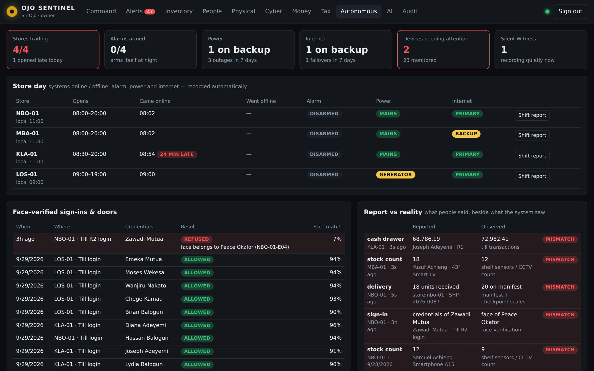

We see
everything
they ignore.
OJO Sentinel watches your stock, cash, people, deliveries, systems and tax, runs every store day on its own, and tells you, the owner, what is really happening the moment it happens. No manager can hide it from you.

In the noise, things go wrong quietly.
You are running a hundred things at once. By the time you notice a loss, it has usually been going on for weeks. OJO Sentinel was built for the owner who deserves the truth about their business, in real time, without filters.
Five pillars. One command dashboard.
Physical security, digital protection, inventory control, people tracking and AI threat detection, built as one system that sees across all of them.
One screen. Every store.
Anywhere in the world: live sales, stock value, staff on site, vehicles on the road, cameras and alerts for every branch, on your phone or laptop.
Plain answers, not raw footage.
No one can hide the truth from you. Not even your managers.
Built for the African market and beyond.
You will never owe KRA without knowing it first.
A business also bleeds through missed tax deadlines, lapsed licences and accounting gaps nobody catches until the penalties arrive. OJO Sentinel connects your sales, payroll and purchases to KRA’s iTax and eTIMS, and shows you what you owe, when, and whether you’re compliant.
What OJO Sentinel covers that others miss
Most accounting software handles what you put into it. OJO Sentinel checks your operations against your books, and your books against KRA.
Your business runs itself.
You just watch it grow.
OJO Sentinel doesn’t wait to be asked. It opens the day, checks who is really signing in, watches power, internet and every device, arms the alarm at night and reconciles the shift at close. It calls people only when something needs a human.

One subscription.
Pick how far it watches.
Billed per business in Kenyan shillings. A single M-Pesa payment is limited to KES 250,000, so yearly Standard and Premium are paid by card. Cameras, sensors and trackers are not included.
Step into the owner’s command centre.
Set off a weapon alert, a tampered delivery or a storekeeper hiding a loss. Then switch to a manager and try to make it go away.